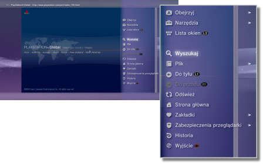

Sieć > Podstawowa obsługa przeglądarki internetowej
Podstawowa obsługa przeglądarki internetowej
Wygląd ekranu

(1) |
Nazwa strony |
|---|---|
(2) |
Adres strony |
(3) |
Ikona SSL |
(4) |
Ikona ładowania |
(5) |
Ikona zabezpieczeń przeglądarki |
(6) |
Adres docelowy łącza |
(7) |
Wskaźnik |
Metody przewijania
| Przyciski kierunkowe | Przenoszenie wskaźnika na łącze. |
|---|---|
| Prawy drążek | Przewijanie w wybranym kierunku. |
Korzystanie z menu
Naciśnięcie przycisku  powoduje wyświetlenie menu, za pomocą którego można wykonać rozmaite działania oraz wybrać ustawienia. Menu można wyświetlać lub ukrywać przez naciśnięcie przycisku . Elementy menu są różne w trybie przeglądania i w trybie okien.
powoduje wyświetlenie menu, za pomocą którego można wykonać rozmaite działania oraz wybrać ustawienia. Menu można wyświetlać lub ukrywać przez naciśnięcie przycisku . Elementy menu są różne w trybie przeglądania i w trybie okien.

Wprowadzanie adresu (URL)
Po naciśnięciu przycisku START na ekranie zostanie wyświetlona klawiatura umożliwiająca wprowadzenie adresu. Gdy po wprowadzeniu adresu będzie wybrana ikona  , klawiatura zostanie zamknięta, a na jej miejsce otworzy się strona o podanym adresie.
, klawiatura zostanie zamknięta, a na jej miejsce otworzy się strona o podanym adresie.
Kopiowanie tekstu
Tekst wyświetlany na stronie w przeglądarce internetowej można skopiować.
1. |
Za pomocą lewego drążka przenieś wskaźnik do tekstu, który chcesz skopiować, a następnie naciśnij przycisk |
|---|---|
2. |
Przytrzymaj przycisk |
3. |
Zwolnij przycisk |
4. |
Z wyświetlonego menu wybierz opcję [Kopiuj]. |
Wskazówki
- Skopiowany tekst można wkleić za pomocą przycisku [Wklej] na klawiaturze ekranowej.
- Jeśli w kroku 4 wybrano opcję [Wyszukaj], można przeprowadzić wyszukiwanie internetowe na podstawie skopiowanego tekstu.
Drukowanie strony internetowej
Aby móc używać tej funkcji, należy najpierw skonfigurować drukarkę, wybierając opcję  (Ustawienia) > [Ustawienia drukarki] > [Wybór drukarki].
(Ustawienia) > [Ustawienia drukarki] > [Wybór drukarki].
1. |
Otwórz stronę internetową, którą chcesz wydrukować, a następnie naciśnij przycisk |
|---|---|
2. |
Wybierz opcję [Plik] > [Wydrukuj ten ekran]. |
3. |
Sprawdź ustawienia drukowania. |
4. |
Naciśnij przycisk [Drukuj]. |
Wskazówka
Obsługiwane modele drukarek różnią się w zależności od kraju i regionu. Aby uzyskać więcej informacji, odwiedź witrynę internetową SIE dla swojego regionu.
Otwieranie wielu okien
Można otworzyć wiele okien jednocześnie. Gdy wskaźnik jest umieszczony na łączu, naciśnij i przytrzymaj przycisk  , dopóki łącze nie zostanie otwarte w nowym oknie.
, dopóki łącze nie zostanie otwarte w nowym oknie.